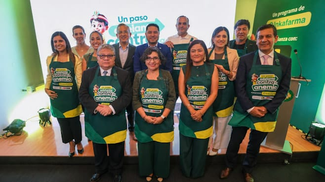
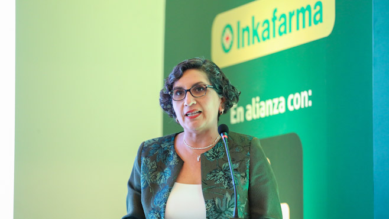

La anemia infantil se puede prevenir con una alimentación rica en hierro, controles oportunos y buenos hábitos. Conoce qué alimentos incluir y cuándo consultar al establecimiento de salud.

Fuente: Ministerio de Salud (Minsa).
La anemia infantil es un problema de salud que afecta el desarrollo físico y cognitivo de niñas y niños, especialmente durante los primeros años de vida. La buena noticia es que, en muchos casos, se puede prevenir con una alimentación adecuada, controles de salud oportunos y hábitos simples en el hogar. El Ministerio de Salud (Minsa) impulsa acciones y alianzas para acercar información práctica a las familias sobre cómo prevenir y combatir la anemia.
El hierro es un nutriente clave para la formación de hemoglobina, la proteína que transporta oxígeno en la sangre. Cuando un niño no recibe suficiente hierro, puede sentirse cansado, irritable, tener menos apetito o presentar dificultades para aprender. Por eso, la prevención desde la alimentación es fundamental.
No todos los alimentos contienen la misma cantidad ni el mismo tipo de hierro. El hierro de origen animal (hierro hemo) se absorbe mejor, pero también se puede obtener hierro de alimentos vegetales combinado con vitamina C para mejorar su absorción.
La sangrecita, carnes, menestras y frutas con vitamina C son aliados para prevenir la anemia infantil.
Además de la alimentación, hay prácticas importantes que ayudan a proteger a los niños:
La anemia puede pasar desapercibida al inicio. Algunos signos posibles son palidez, cansancio, irritabilidad, poco apetito o menor interés en jugar. Sin embargo, el diagnóstico se confirma con una evaluación de salud y un examen de hemoglobina. Por eso, no basta con observar: es importante acudir a los controles en el establecimiento de salud.

Los controles de crecimiento y desarrollo permiten detectar la anemia a tiempo y recibir tratamiento oportuno.
Prevenir la anemia es una tarea cotidiana. Incluir alimentos ricos en hierro en las comidas familiares, ofrecer preparaciones variadas y mantener los controles de salud son pasos concretos que marcan diferencia. También es útil buscar información confiable y consultar con el personal de salud ante dudas sobre la alimentación o suplementación del niño.
Con hábitos simples y constancia, las familias pueden contribuir a que niñas y niños crezcan con más energía, mejor desarrollo y mayores oportunidades para aprender.